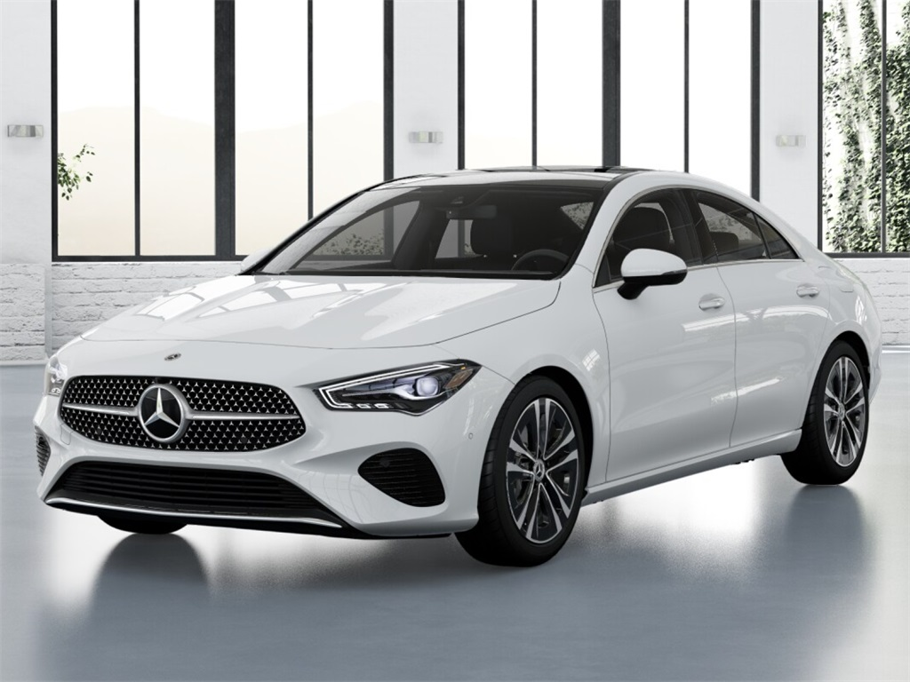
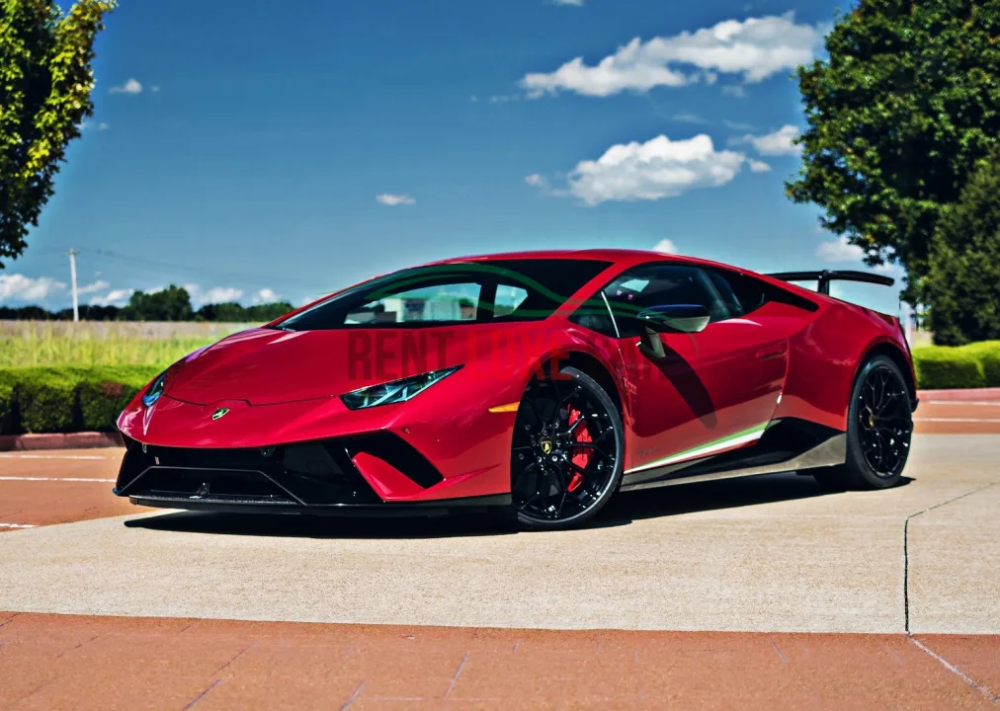

Bayerische Motoren Werke Aktiengesellschaft (BMW AG),[4] trading as BMW Group (commonly abbreviated to BMW (German pronunciation: [ˌbeːʔɛmˈveː] ⓘ), sometimes anglicised as Bavarian Motor Works), is a German multinational conglomerate manufacturer of luxury vehicles and motorcycles headquartered in Munich, Germany. The moniker, "BMW ", first came into use when the German firm Rapp Motorenwerke changed its name to Bayerische Motoren Werke GmbH (BMW GmbH) in 1917. Thereafter, in 1922, the name and assets of BMW GmbH were transferred to the aircraft manufacturer Bayerische Flugzeugwerke AG (formerly Otto Flugmaschinenfabrik), thereby giving rise to the company known today as BMW AG.[5][6] BMW AG's automobiles are marketed under the BMW, Mini, and Rolls-Royce brands while its motorcycles are marketed under the BMW Motorrad brand. In 2023, BMW became the world's ninth-largest producer of motor vehicles (with 2,555,341 vehicles made in that year alone)[7] as well as the 6th largest automaker by revenue.[8] In 2023, it was ranked 46th in the Forbes Global 2000.[9] The company also has significant motor-sport history, especially in touring cars, sports cars, and the Isle of Man TT. BMW AG is headquartered in Munich and produces motor vehicles in Germany, United Kingdom, United States, Brazil, Mexico, South Africa, India, and China.[10] The Quandt family [de] is a long-term shareholder of the company, following investments by the brothers Herbert and Harald Quandt in 1959 which saved BMW from bankruptcy, with remaining shares owned by the public. History Main article: History of BMW Otto Flugmaschinenfabrik was founded in 1910 by Gustav Otto in the Kingdom of Bavaria, which was a state of the German Empire. The firm was reorganized on 18 August 1916 into Bayerische Flugzeugwerke AG. This company was then renamed to Bayerische Motoren Werke (BMW) in 1922. However, the name BMW dates back to 1913, when a company using that name was founded by Karl Rapp initially as Rapp Motorenwerke. The name and Rapp Motorenwerke's engine-production assets were transferred to Bayerische Flugzeugwerke in 1922, who adopted the name the same year.[11] BMW's first product was an engine for fighter aircraft of the Luftstreitkräfte. It was a straight-six called the BMW IIIa, designed in the spring of 1917 by engineer Max Friz. Following the end of World War I, BMW remained in business by producing motorcycle engines, agricultural equipment, household items, and railway brakes. The company produced its first motorcycle, the BMW R 32, in 1923. BMW became an automobile manufacturer in 1928 when it purchased Fahrzeugfabrik Eisenach, which, at the time, built the Austin 7 under licence from Automobilwerk Eisenach, badged as the Dixi.[12] The first car sold as a BMW was a rebadged Dixi called the BMW 3/15, following BMW's acquisition of the car manufacturer Automobilwerk Eisenach. Throughout the 1930s, BMW expanded its range into sports cars and larger luxury cars.[13][14] Aircraft engines, motorcycles, and automobiles would be BMW's main products until World War II. During the war, BMW concentrated on building the BMW 801 aircraft engine using as many as 40,000 slave laborers.[15] These consisted primarily of prisoners from Nazi concentration camps, most prominently Dachau. Motorcycles remained as a side-line and automobile manufacture ceased altogether. BMW's factories were heavily bombed during the war and its remaining West German facilities were banned from producing motor vehicles or aircraft after the war. The company survived by making pots, pans, and bicycles. In 1948, BMW restarted motorcycle production. BMW resumed car production in Bavaria in 1952 with the BMW 501 luxury saloon. The range of cars was expanded in 1955, through the production of the cheaper Isetta microcar under licence. Slow sales of luxury cars and small profit margins from microcars, meant BMW was in serious financial trouble and in 1959 the company was nearly taken over by rival Daimler-Benz.[16][17] A large investment in BMW by Herbert Quandt and Harald Quandt resulted in the company surviving as a separate entity. Günther Quandt was a well-known German industrialist and joined the Nazi party in 1933; he made a fortune arming the German Wehrmacht, manufacturing weapons and batteries.[18] Many of his enterprises were appropriated from Jewish owners under duress with minimal compensation. At least three of his enterprises made extensive use of slave laborers, as many as 50,000 in all.[19] One of his battery factories had its own on-site concentration camp, complete with gallows. Life expectancy for laborers was six months.[19][20] While Quandt and BMW were not directly connected during the war, funds amassed in the Nazi era by his father allowed Herbert Quandt to buy BMW.[15]

Audi AG[a] is a German automotive manufacturer of luxury vehicles headquartered in Ingolstadt, Bavaria, Germany. A wholly owned subsidiary of the Volkswagen Group, Audi produces vehicles in nine production facilities worldwide. The origins of the company are complex, dating back to the early 20th century and the initial enterprises (Horch and the Audiwerke) founded by engineer August Horch. Two other manufacturers (DKW and Wanderer) also contributed to the foundation of Auto Union in 1932. The modern Audi era began in the 1960s, when Auto Union was acquired by Volkswagen from Daimler-Benz.[7] Volkswagen relaunched the Audi brand with the 1965 introduction of the Audi F103 series, and merged Auto Union with NSU Motorenwerke in 1969, thus creating the present-day form of the company. The company name is based on the Latin translation of the surname of the founder, August Horch. Horch, meaning 'listen', becomes audi in Latin. The four rings of the Audi logo each represent one of four car companies that banded together to create Audi's predecessor company, Auto Union. Audi's slogan is Vorsprung durch Technik, which is translated as 'Progress through Technology'.[8] Audi became a sister to Dr. Ing. h.c. F. Porsche AG (more commonly known as Porsche AG) following Volkswagen Group's 100% acquisition of the latter in 2012, and along with German brands BMW and Mercedes-Benz, is among the best-selling luxury automobile brands in the world.[9] History Birth of the company and its name Automobile company Wanderer was originally established in 1885, later becoming a branch of Audi AG. Another company, NSU, which also later merged into Audi, was founded during this time, and later supplied the chassis for Gottlieb Daimler's four-wheeler.[10] On 14 November 1899, August Horch (1868–1951) established the company A. Horch & Cie. in the Ehrenfeld district of Cologne. In 1902, he moved with his company to Reichenbach im Vogtland. On 10 May 1904, he founded the August Horch & Cie. Motorwagenwerke AG, a joint-stock company in Zwickau (State of Saxony). After troubles with the Horch chief financial officer, August Horch left Motorwagenwerke and founded in Zwickau on 16 July 1909, his second company, the August Horch Automobilwerke GmbH. His former partners sued him for trademark infringement. The German Reichsgericht (Supreme Court) in Leipzig,[11] eventually determined that the Horch brand belonged to his former company.[12] 1923 Audi Type E Since August Horch was prohibited from using horch as a trade name in his new car business, he called a meeting with close business friends, Paul and Franz Fikentscher from Zwickau. At the apartment of Franz Fikentscher, they discussed how to come up with a new name for the company. During this meeting, Franz's son was quietly studying Latin in a corner of the room. Several times he looked like he was on the verge of saying something but would just swallow his words and continue working, until he finally blurted out, "Father – audiatur et altera pars... wouldn't it be a good idea to call it audi instead of horch?".[13] Horch in German means 'hark' or 'hear', which is audi in the singular imperative form of audire—'to listen'—in Latin. The idea was enthusiastically accepted by everyone attending the meeting.[14] On 25 April 1910 the Audi Automobilwerke GmbH Zwickau (from 1915 on Audiwerke AG Zwickau) was entered in the company's register of Zwickau registration court. The first Audi automobile, the Audi Type A 10/22 hp (16 kW) Sport-Phaeton, was produced in the same year,[15] followed by the successor Type B 10/28PS in the same year.[16] Audi started with a 2,612 cc straight-four engine model Type A, followed by a 3,564 cc model, as well as 4,680 cc and 5,720 cc models. These cars were successful even in sporting events. The first six-cylinder model Type M, 4,655 cc appeared in 1924.[17] August Horch left the Audiwerke in 1920 for a high position at the ministry of transport, but he was still involved with Audi as a member of the board of trustees. In September 1921, Audi became the first German car manufacturer to present a production car, the Audi Type K, with left-handed drive.[18] Left-hand drive spread and established dominance during the 1920s because it provided a better view of oncoming traffic, making overtaking safer[18] when driving on the right.

Mercedes-Benz (German pronunciation: [mɛʁˌtseːdəs ˈbɛnts, -dɛs -] ⓘ),[6][7][a] commonly referred to simply as Mercedes and occasionally as Benz, is a German automotive brand that was founded in 1926. Mercedes-Benz AG (a subsidiary of the Mercedes-Benz Group, established in 2019) is based in Stuttgart, Baden-Württemberg, Germany.[1] Mercedes-Benz AG manufactures luxury vehicles and light commercial vehicles, all branded under the Mercedes-Benz name. From November 2019 onwards, the production of Mercedes-Benz-branded heavy commercial vehicles (trucks and buses) has been managed by Daimler Truck, which separated from the Mercedes-Benz Group to form an independent entity at the end of 2021. In 2018, Mercedes-Benz became the world’s largest premium vehicle brand, with a sales volume of 2.31 million passenger cars.[8] The roots of the brand trace back to the 1901 Mercedes by Daimler-Motoren-Gesellschaft and the 1886 Benz Patent-Motorwagen and 1894 Benz Velo by Carl Benz, which is widely recognized as the first automobile powered by an internal combustion engine. The brand’s slogan is "The Best or Nothing".[9] History See also: List of companies involved in the Holocaust, Diesel emissions scandal, and History of the automobile Carl Benz (1844–1929) made the 1886 Benz Patent Motorwagen, which is widely regarded as the first automobile. Mercedes-Benz traces its origins to Carl Benz's first internal combustion engine in a car, seen in the Benz Patent-Motorwagen – financed by Bertha Benz's dowry[10] and patented in January 1886[11] – and Gottlieb Daimler and their engineer Wilhelm Maybach's conversion of a stagecoach, with the addition of a petrol engine, introduced later that year. The Mercedes automobile was first marketed in 1901 by Daimler Motoren Gesellschaft (DMG). Emil Jellinek-Mercedes, an Austrian automobile entrepreneur who worked with DMG, registered the trademark in 1902, naming the 1901 Mercedes 35 hp after his daughter Mercedes Jellinek. Jellinek was a businessman and marketing strategist who promoted "horseless" Daimler automobiles among the highest circles of society. At the time, it was a meeting place for the haute volée of France and Europe, especially in winter. His customers included the Rothschild family and other wealthy clients, but as early as 1901, he was selling Mercedes cars in the "New World" as well, including to billionaires Rockefeller, Astor, Morgan, and Taylor. At the Nice race he attended in 1899, Jellinek drove under the pseudonym "Monsieur Mercédès". Many consider that race the birth of Mercedes-Benz as a brand. In 1901, the name "Mercedes" was re-registered by DMG worldwide as a protected trademark. The first Mercedes-Benz branded vehicles were produced in 1926, following the merger of Karl Benz and Gottlieb Daimler's companies into the Daimler-Benz company on 28 June of the same year.[11][12]
Automobiles Ettore Bugatti was a French manufacturer of high-performance automobiles. The company was founded in 1909 in the then-German city of Molsheim, Alsace, by the Italian-born industrial designer Ettore Bugatti. The cars were known for their design beauty and numerous race victories. Famous Bugatti automobiles include the Type 35 Grand Prix cars, the Type 41 "Royale", the Type 57 "Atlantic" and the Type 55 sports car. The death of Ettore Bugatti in 1947 proved to be a severe blow to the marque, and the death of his son Jean in 1939 meant that there was no successor to lead the factory. With no more than about 8,000 cars made, the company struggled financially, and it released one last model in the 1950s before eventually being purchased for its airplane parts business in 1963. In 1987, an Italian entrepreneur bought the brand name and revived it as Bugatti Automobili S.p.A.[2] A film about the founding of Bugatti is being produced by Andrea Iervolino.[3]The founder Ettore Bugatti was born in Milan, Italy, and the automobile company that bears his name was founded in 1909 in Molsheim located in the Alsace region which was part of the German Empire from 1871 to 1919. The company was known both for the level of detail of its engineering in its automobiles, and for the artistic manner in which the designs were executed, given the artistic nature of Ettore's family (his father, Carlo Bugatti (1856–1940), was an important Art Nouveau furniture and jewelry designer).

Lamborghini[a] (officially Automobili Lamborghini S.p.A. and colloquially Lambo) is an Italian manufacturer of luxury sports cars and SUVs based in Sant'Agata Bolognese. The company is owned by the Volkswagen Group through its subsidiary Audi. Ferruccio Lamborghini (1916–1993), an Italian manufacturing magnate, founded Automobili Ferruccio Lamborghini S.p.A. in 1963 to compete with Ferrari. The company was noted for using a rear mid-engine, rear-wheel drive layout. Lamborghini grew rapidly during its first decade, but sales plunged in the wake of the 1973 worldwide financial downturn and the oil crisis. The firm's ownership changed three times after 1973, including a bankruptcy in 1978. American Chrysler Corporation took control of Lamborghini in 1987 and sold it to Malaysian investment group Mycom Setdco and Indonesian group V'Power Corporation in 1994. In 1998, Mycom Setdco and V'Power sold Lamborghini to the Volkswagen Group where it was placed under the control of the group's Audi division. New products and model lines were introduced to the brand's portfolio and brought to the market and saw an increased productivity for the brand. In the late 2000s, during the Great Recession, Lamborghini's sales dropped nearly 50%. Lamborghini currently produces the twin-turbo V8 plug-in Hybrid Temerario, the Urus SUV powered by a twin-turbo V8 engine, and the Revuelto, a V12/electric hybrid, as of 2025. In addition, the company produces V12 engines for offshore powerboat racing. Lamborghini Trattori, founded in 1948 by Ferruccio Lamborghini, is headquartered in Pieve di Cento, Italy, and continues to produce tractors. Since 1973, Lamborghini Trattori has been a separate entity from the Lamborghini's automobile division. History Main article: History of Lamborghini Ferruccio Lamborghini with a Jarama and a tractor of his brand Manufacturing magnate Italian Ferruccio Lamborghini founded the company in 1963 with the objective of producing a refined grand touring car to compete with offerings from established marques such as Ferrari. The company's first models, such as the 350 GT, were released in the mid-1960s. Lamborghini was noted for the 1966 Miura sports coupé, which used a rear mid-engine, rear-wheel drive layout. In 1963, Ferruccio Lamborghini, already an established industrialist who manufactured tractors, boilers, and air conditioners, founded Lamborghini Automobili on May 7, 1963.[5] The company was headquartered in a purpose-built facility in Sant'Agata Bolognese. He surrounded himself with highly capable engineers and technicians: Giotto Bizzarrini designed the engine, Gian Paolo Dallara and Paolo Stanzani developed the chassis, and Franco Scaglione designed the bodywork. The first model, the 350 GTV, was not a success due to its futuristic style and remained a one-off prototype. The project was then handed over to the Milanese coachbuilder Touring, which created a more classic and sober design. The new car, named the 350 GT, was a fast and elegant two-seater grand tourer (according to Ferruccio's standards) and was the first series-produced car by Lamborghini. It achieved moderate sales success and was followed by the 400 GT (which benefited from an increased engine capacity) and the 400 GT 2+2, both presented in 1966. Lamborghini grew rapidly during its first ten years, but sales fell in the wake of the 1973 worldwide financial downturn and the oil crisis. Ferruccio Lamborghini sold the company to Georges-Henri Rossetti and René Leimer and retired in 1974. The company went bankrupt in 1978, and was placed in the receivership of brothers Jean-Claude and Patrick Mimran in 1980. The Mimrans purchased the company out of receivership by 1984 and invested heavily in its expansion. Under the Mimrans' management, Lamborghini's model line was expanded from the Countach to include the Jalpa sports car and the LM002 high-performance off-road vehicle. The Mimrans sold Lamborghini to the Chrysler Corporation in 1987. After replacing the Countach with the Diablo and discontinuing the Jalpa and the LM002, Chrysler sold Lamborghini to Malaysian investment group Mycom Setdco and Indonesian group V'Power Corporation in 1994. In 1998, Mycom Setdco and V'Power sold Lamborghini to the Volkswagen Group where it was placed under the control of the group's Audi division. New products and model lines were introduced to the brand's portfolio and brought to the market and saw an increased productivity for the brand Lamborghini. In the late 2000s, during the Great Recession, Lamborghini's sales dropped nearly 50%.
